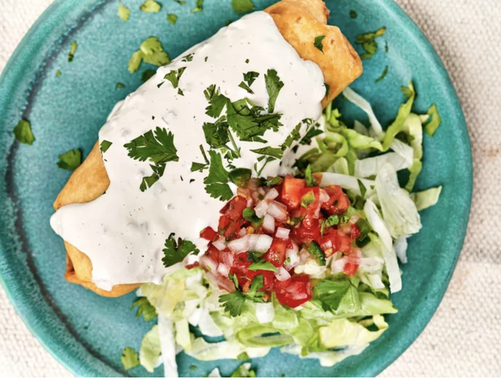

Home
The Best Chimichangas

Description
These are definitely the best chimichangas you'll ever make, filled with seasoned chicken and refried beans, spicy, crisp, cheesy, and delicious.
Top them with all the best toppings: warm queso, pico de gallo, shredded lettuce, and everything you enjoy.
Ingredients
- 1 teaspoon kosher salt
- 1/2 teaspoon freshly ground black pepper
- 1 teaspoon garlic powder
- 3 skinless, boneless chicken breasts
- 1 tablespoon olive oil
- 1/2 cup finely chopped onion
- 3 cloves garlic, finely minced
- 1 tablespoon ancho chili powder
- 2 teaspoons ground cumin
- 2 cups plus 3 tablespoons water
- 1 chicken bouillon cube or 1 teaspoon bouillon paste, such as Better Than Bouillon®
- 1 (7 ounce) can green chiles
- 3 tablespoons all-purpose flour
- 2 cups peanut oil or vegetable oil for frying, or as needed
- 8 (10 to 12-inch) flour tortillas
- 1 1/2 cups refried beans, heated
- 1 (8 ounce) block pepper Jack cheese, shredded
- Toppings such as warm queso, pico de gallo, cilantro, and shredded lettuce
Steps
- Sprinkle salt, pepper, and garlic powder evenly over one side of the chicken breasts.
- Heat olive oil in a large deep skillet over medium-high heat. Add chicken, seasoned side down, into skillet, and cook, undisturbed, until browned, 3 to 4 minutes. Flip chicken over and push to one side of the pan.
- Add onion, garlic, chili powder, and cumin to the skillet and cook for 1 minute. Add 2 cups water and bouillon and gently stir until well combined.
- Bring mixture to a simmer. Reduce heat, cover, and simmer gently until chicken is no longer pink at the center and juices run clear, about 20 minutes. An instant-read thermometer inserted near the center should read 165 degrees F (74 degrees C).
- Remove chicken from pan and increase heat to medium-high; cook until broth mixture is reduced by about half. Shred chicken and add back to the pan, along with green chiles. Stir until well combined and remove from heat.
- Whisk flour and remaining water together in a small bowl until smooth; set aside. Heat oil for frying in a large saucepan or Dutch oven over medium-high heat to 350 degrees F (175 degrees C). Set a wire rack over a rimmed baking sheet.
- Place tortilla on work surface and spread about 3 tablespoons beans in the center. Top with 1/4 cup shredded cheese and 1/3 to 1/2 cup well-drained shredded chicken. Brush flour mixture lightly around edges of top half of tortilla. Fold sides of tortilla in just over edges of filling and fold bottom of tortilla up over filling. Press back on the tortilla to push the filling tightly together and continue to roll upwards. Lightly press the edges of the tortilla to seal tightly and set aside, seam side down. Repeat with remaining ingredients.
- Carefully place 2 burritos into hot oil and cook, turning occasionally, until golden brown and toasted on the outside, about 2 minutes. Drain on the prepared baking sheet. Bring oil back up to temperature and repeat with remaining burritos.
- Top as desired with warm queso, pico de gallo, cilantro and shredded lettuce, or other toppings, and serve immediately.